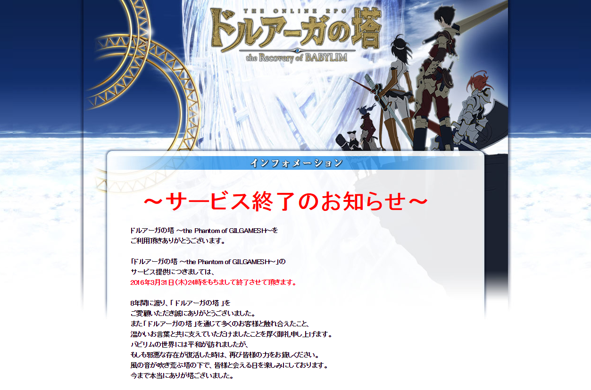

私の物語が語られるとすれば「巨人たちとともに歩んだ」と伝えてほしい
人は生まれては死んでいくが彼らの名は不滅だ
伝えてほしい私がヘクトルと同じ時代に生きたことを――
そしてアキレスと同じ時代に生きたことを――オデュッセウス トロイ（映画）
If they ever tell my story, let them say I walked with giants.
Men rise and fall like the winter wheat but these names will never die.
Let them say I lived in the time of Hector tamer of hourses.
Let them say I lived in the time of Achilles.Odysseus TROY (movie)
THE LAST DRUAGA スケジュール
| 開始時間 | イベント内容 | マップ |
|---|---|---|
| 19:00 | ダイスバトル | バビリム城門 |
| 20:00 | D-ZONE MoE宣伝部長登場 |
バビリム城門 |
| 21:00 | 全マップ巡りの旅 | ラジャフ集合 |
| 23:00 | GMスピーチ ？？様スピーチ ？？様スピーチ 塔前記念撮影 打ち上げ花火乱射 |
ドルアーガの塔周辺 |
| 24:00 | THE LAST DRUAGA ～思い出よ永遠に～ |
実際にはスピーチはなく４人の GM からの手紙と遠藤雅伸氏からの言葉であった。
チャットログ
マップ「ドルアーガの塔周辺」にて開催されたイベントのチャットログをここに残します。 一般ユーザーに起因するチャットログは含まれていません。 サーバーシャットダウンのカウントダウンは会話ではないですが終了への緊迫感を感じるために残してあります。
イベント開始直前
22:59:11 イベント情報22:59:17 間もなく、ドルアーガの塔周辺で22:59:34 THE LAST DRUAGAを開催いたします23:00:00 最後の思い出を皆様で作るため、是非ドルアーガの塔周辺にお越しください23:00:07 サーバーシャットダウンまで後60分です。
イベント開始
23:01:28 イベント情報23:01:42 ドルアーガの塔へお越しの皆様23:02:11 本日はご来場いただき誠にありがとうございます23:02:50 約600名にも及ぶドルアーガの塔ファンが23:03:02 現在、ドルアーガの塔に遊びに来てくれています23:03:44 ただいまより、GMからの手紙や23:04:20 遠藤様からのお言葉など、著名人からのお言葉をいただきますので23:05:45 最後までどうぞお楽しみください
ゆしゅりぃ氏の手紙
23:06:45 それでは、まず始めに23:07:06 非常～～にマニアックなGM様からのお手紙をご紹介させていただきます！23:07:33 最初のお手紙は、開発担当GMゆしゅりぃさんです！23:08:00 皆さん、ボイスはご自身の想像でアテレコしてくださいね！23:08:32 それでは読み上げます
23:08:39 初めまして皆様。23:08:49 恐らく開発陣の中では一番長く携わった「ゆしゅりぃ」です。23:09:01 もしかしたら公式ツイッターで見かけた人もいるかと思います。23:09:15 機能テストの頃から今まで、陰ながら見守って来ましたが、23:09:24 それもできなくなってしまう事を考えると、我が子を失う思いでいっぱいです。23:09:41 これまでプレイして頂いた全ての皆々様、23:09:48 また関係者様、そしてこのような機会を設けて頂いた運営陣に感謝致します。23:10:00 今はまだできませんが、いつか開発秘話なども言える機会があれば良いなと思っています。23:10:09 それでは、またどこかでお会いできる時を楽しみにしています！
23:10:42 ということで、開発担当ゆしゅりぃさんからのお手紙でした！23:11:13 恐らく、時報がゆしゅりぃさんだったかと記憶しております23:11:32 ドルアーガマニアの人はきっと、聞いたことがある名前だったと思います23:12:09 ゆしゅりぃさんが手掛けた開発実績は数多く23:12:20 クエスト作成、コメントボード作成、倉庫作成、インベントリ作成、23:12:32 64ビット対応、オフランディヴィーヌ闘技会作成、「ギエナの原」の各門作成、23:12:40 一部のエニグマシステム作成、画面解像度選択数の拡張、キャラ数の拡張、倉庫数の拡張など！23:12:56 どれもこの世界で重要な役割を担うシステムばかりです！23:13:30 ゆしゅりぃさんのおかげでここまでドルアーガの塔は素敵なゲームになることができました。23:13:40 ゆしゅりぃさん、ありがとうございました。
アミナ氏の手紙
23:14:13 続きまして23:14:53 知る人ぞ知るあのお方23:15:02 GMアミナ様よりお手紙をいただいております23:15:21 え…誰…となった方、多数いらっしゃると思います23:15:56 皆様は覚えていないかもしれませんが、アミナ様がどーしても手紙を書きたいということで23:16:05 今回ご紹介させていただきます23:16:17 それでは、サクサク読み上げさせていただきます
23:16:22 みなさんお久しぶりです！アミナです！23:16:26 きっとほとんどの方が私のことなんて忘れてしまったことでしょう・・・23:16:30 だって私がみなさんとお話をしたのは2012年の夏ですからね・・・23:16:33 残念ながら登場はできませんが、せめてメッセージだけでもと思い23:16:41 こうして手紙を預けた次第です。23:16:51 このたびドルアーガの塔が終わると聞いて運営ブログを見なおしたら23:16:55 ありました私の登場ブログが！！23:16:59 絵文字を多用し、初々しさ溢れ出るメッセージ・・・23:17:05 うーん、あらためて見ると寒気しかしない！23:17:09 そんなダメダメの私でも暖かく受け入れてくれた23:17:13 バビロニアンの皆様には感謝するばかりです・・・23:17:20 なかでも印象に残っているのが・・・23:17:24 う～ん・・・。23:17:29 え～と・・・・。23:17:48 あれ・・・・・。23:17:57 あれです、あれ・・・。23:18:08 水着にマグロヘッド被って、シャドウボクシング！？23:18:22 うん！昔も今も変わんない私！！23:18:30 ただの変態だね！23:18:36 いやもっとしっかりとした思い出があるはずだ！！23:18:46 ああ！あった！！ローパーイラストが浮かび出る花火あるでしょ23:18:59 あれ私が絵を描いたんですよ！23:19:06 よかった、結構いい思い出があったよ23:19:11 後は本当に水着になっていたことばかり思い出しますが・・・23:19:16 そんな思い出がたくさん詰まったドルアーガの塔に最後まで来ていただいた皆さん！23:19:21 最後の最後まで楽しんでいって頂けたら幸いです！23:19:28 それでは、またどこか別の場所で会えることを祈りつつ23:19:33 本当にありが塔ございました！！23:20:13 ご清聴いただきありがとうございました
23:20:46 少々お見苦しい文章もあるかと思いますが、温かく見守っていただけますと幸いです
手下T氏の手紙
23:21:03 続きまして、皆様ご存知のあの方！23:21:16 手下Tさんからお手紙をいただいております！23:22:06 それでは、読み上げます！
23:22:18 やぁ諸君！23:22:30 私の名前はギャンブルナイトの手下T！23:22:37 初めましての人、ハジメナマステ！23:22:45 お久しぶりの人、本当にお久しぶりdeathゅ！23:22:52 私はかつてこのエリシュ大陸で23:22:59 ドルアーガの塔を下っ端として改築工事したり23:23:06 バビリム各地で登頂者達とイベントと称して23:23:11 ダイス勝負を行っていたナイト型のモンスターだ。23:23:18 最終日までこの地に集まってくれて、本当にありが塔！23:23:24 そしてこのドルアーガの塔を攻略してくれた全ての登頂者に感謝する！23:23:33 サキュバスの窟の追加、オフランディヴィーヌ闘技会の追加、23:23:37 ドルアーガの塔の見た目を巨大な邪神に変えたみたり23:23:45 イベント中のどさくさに紛れて戦闘不能にさせられたりと23:23:49 思い返すと8年間様々な事があった！23:23:55 私から諸君らへ最後に伝えたいことはただ一つ。23:24:02 この地で仲間達と冒険をした事、そしてドルアーガの塔に挑んだことを23:24:11 忘れないでいてくれたら私は嬉しい。23:24:18 どこかで会う機会があったら是非ダイス勝負をしようぞ！23:24:24 そしてこのドルアーガの塔を愛してくれてありが塔！23:24:30 では、また会う時までバイバイバビリム！
23:25:02 以上、手下Tさん(ダイスも決闘も弱め）からの手紙でした
otamachan氏の手紙
23:26:48 それでは、otamachanのお手紙をご紹介させていただきます！
23:27:25 お久しぶりでしゅotamachanでしゅ！23:27:42 みなさんと出逢えた場所が無くなってしまうのは悲しいでしゅ…23:27:59 でも、otamaはみなさんに出会えたおかげで沢山成長できたから、23:28:11 これを糧にますます大きく成長できたらなと思ってるでしゅ♪23:28:20 前向きに！前向きに…！23:28:29 今までドルアーガ(otama含む☆)を愛してくれてありがとうございましたでしゅー♪
23:28:54 以上、otamachanからのお手紙でした23:29:28 GMからのお手紙は以上となります。23:30:07 サーバーシャットダウンまで後30分です。
遠藤雅伸氏からの言葉
23:30:17 続きまして、遠藤雅伸様よりお言葉をいただきます
23:30:51 @-QQノぃょぅ23:31:23 とりま、一番の関心事と思われることから・・・23:31:58 このゲームのおしまいは、カイがバビリムに帰ってくるのはず23:32:46 なので、30分弱で本来なら「カイ様が帰ってきたぞ！」となるはず23:33:21 なんて話は誰にも伝わっていないので、みんな脳内で補完して23:33:46 で、この塔がなぜあるかというと23:34:33 ギルは某地にて正気を失っている最中で23:35:06 その間ギエナから逃げ出した黒ギルの力が強くなって、塔の形を取っているのだね23:35:57 ギルは、クァナンの闘技場で邪眼の力に囚われているというのが、実際の時間の流れ23:36:47 カイが戻ってギルが邪眼の魔力から解放されたら、黒ギルの力が弱まって、この塔は消えてしまう23:37:24 ギエナに変な穴があったのも、黒ギルが抜け出した跡だったりとか23:38:09 ま、商業的な流れと、お話とは別の次元なので23:38:39 最初にアニメ「ドルアーガの塔」の話があっげ23:38:42 げ23:38:49 ⇒て23:39:37 時代としてデスティニーオブギルガメスと被ることがわかってから23:40:37 ギルがドルアーガを倒して、霊峰サレアでサキュバスに黒ギルを呼び起こされるところは決まってた23:41:31 なので、このゲームに集まりし塔頂者はギルから生まれし黒ギルの力を弱め23:41:50 ギルの復活を待つ、という体だったのだよ23:42:32 最後にドルアーガが実装されて、遠藤としては満足しているし23:42:52 ちゃんと自力で（嘘）、ドルアーガ倒したから23:43:13 （clockworkありがと)納得した23:44:07 というわけで、８年間、走馬燈のように色々と思い出されるけど、楽しかった23:44:51 いろんな場所でいろんな人と出会ったし、これからもこのゲームのことは忘れない23:45:01 ファンのみなさん、ありがとうございました！
23:45:07 サーバーシャットダウンまで後15分です。23:46:57 遠藤様、ありがとうございました
その後
23:47:55 それでは、ここで記念撮影を行いたいと思います23:49:21 それでは、座標X326、Y626周辺で撮影を行います23:49:50 北西側を向いて、皆様の思い出を撮影しましょう！23:50:07 サーバーシャットダウンまで後10分です。23:55:07 サーバーシャットダウンまで後5分です。23:55:47 それでは皆様23:56:28 最後に思い出の数だけ、お手元の打ち上げ花火をバビリムの空に打ち上げましょう23:57:10 8年間、ドルアーガの塔をプレイしていただき、誠にありがとうございました！23:58:07 皆様に支えていただいたからこそ、ここまでドルアーガの塔を続けることが出来ました23:58:34 最後までドルアーガの塔を愛していただき、誠にありがとうございました！23:59:07 サーバーシャットダウンまで後1分です。23:59:41 また邪神が復活した際は、是非皆様の力をお貸しください！23:59:55 塔頂者の皆様に栄光あれ！
塔頂者への手紙
ダンジョン ドルアーガの塔 1F ～ 3F に仕込まれた手紙。
いつもご利用いただきありがとうございます。
「ドルアーガの塔」運営チームです。
この度は最後の最後まで「ドルアーガの塔」を
プレイしていただき、誠にありがとうございます。
8年という長い年月、
「ドルアーガの塔」を続けることが出来たのは、
一重に皆様のご協力があってこそでした。
8年という年月の中で、楽しい思い出も
苦悩した思い出も走馬灯のように浮かんできます。
運営チームの至らぬ点で、ご迷惑をお掛けしたり、
憤りを感じたお客様も多々いらっしゃることと存じます。
その節は大変失礼いたしました。
思うように事を運べず、自暴自棄になる日もございました。
それでもやはり、最も印象深いのは
皆様が塔前でエニグマについて試行錯誤している姿や、
モンスター討伐に向けて狩りをしている姿です。
皆様が純粋にゲームを楽しんでくださる姿を見ることが、
私共にとって何よりも幸せな時間でした。
個人的な感情に近いメッセージを
最後のエニグマの褒章として設定することを、
いかがなものかと感じてはおりますが、
飾らない言葉で皆様に感謝の言葉を届けたいのです。
私は「ドルアーガの塔」をプレイしている皆様に特別な感情があります。
私の人生の中には皆様と一緒に楽しさを共有した思い出がございます。
この思い出を胸に、また新たな楽しさをお届けできるよう精進いたします。
ですので、「ドルアーガの塔」って楽しかったな、と思っていただければ本当に幸いです。
長々とした文章となってしまいましたが、
今までドルアーガの塔をプレイしていただき、本当にありがとうございました。
もしも邪神ドルアーガが復活することがあれば、
その時は是非、皆様の力をお貸しください。
バビロニアンの皆様に栄光あれ！
スクリーンショット
最後のメッセージ
8年間に渡り、「 ドルアーガの塔 」を
ご愛顧いただき誠にありがとうございました。
また「 ドルアーガの塔 」を通じて多くのお客様と触れ合えたこと、
温かいお言葉と共に支えていただけましたことを厚く御礼申し上げます。
バビリムの世界には平和が訪れましたが、
もしも邪悪な存在が復活した時は、再び皆様の力をお貸しください。
風の音が吹き荒ぶ塔の下で、皆様と会える日を楽しみにしております。
今まで本当にありが塔ございました。
クレジット
© NBGI / 株式会社ゴンゾ
株式会社ウィローエンターテイメント及び株式会社バンダイナムコゲームスの
著作権を侵害する行為は禁止されています
転載･再配布等の再利用を禁止します